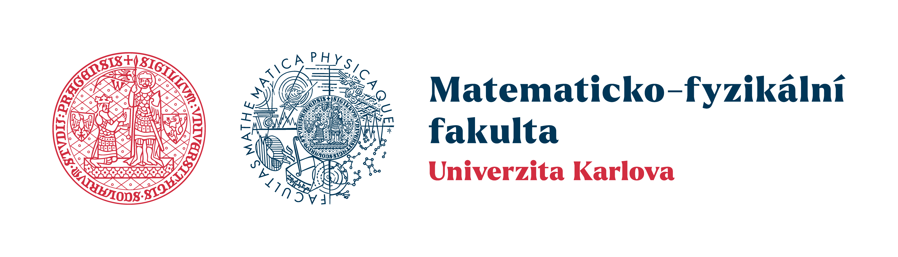

Open Postdoc Position starting September 2026

I have an open postdoc position at the Faculty of mathematics and physics of the Charles University in Prague, starting September 1st, 2026. The subject of the project PRIMUS 26/SCI/026 is "Visco-elastic fluids: analysis and asymptotic behaviour" and concentrates mostly on:
Homogenization of (in)compressible visco-elastic fluids
Singular limits such as low Mach and stratification
Related topics such as existence theory, especially for limiting systems
The applicant must have:
a Ph.D. degree in mathematics or a closely related field
strong communication skills (oral and written) in English
expertise in the field of partial differential equations, preferably Navier-Stokes and related equations
The application shall contain:
certificate of Ph.D. degree (or equivalent qualification)
full CV
list of publications
motivation letter (max. 2 pages)
2 letters of reference (to be sent separately via mail)
What I offer:
temporary full-time contract for 2 years with the possibility of extension
full employee of Charles University with monthly salary of 55.000 CZK
possibility of travels
Interested applicants shall send their application to me via mail: florian.oschmann [at] matfyz.cuni.cz
The application deadline is April 30th, 2026. Shortlisted applicants will be invited for a short personal or online interview.